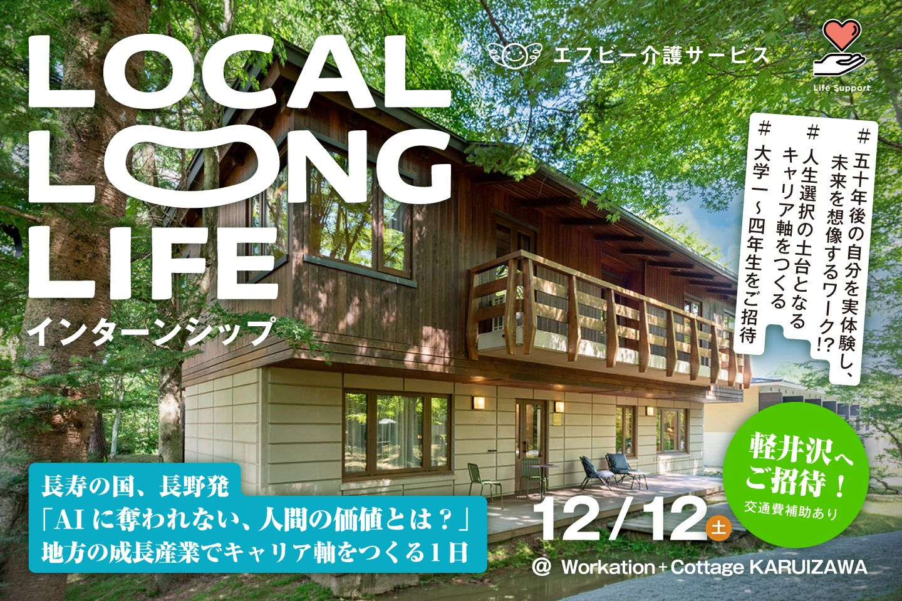
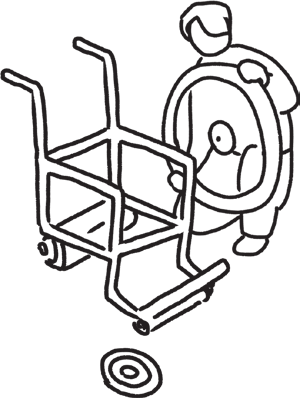

軽井沢で、
未来のキャリア軸をつくる1日。
未来のキャリア軸をつくる1日。
お申込みはこちら（QRはダミー）
https://（申込URLを差し替え）
https://（申込URLを差し替え）

介護 × 福祉用具の現場で、50年後の暮らしを考える。
体験して、チームで提案して、自分の「働く軸」をつくる1日。

高齢者体験ギア・車椅子・ベッドで、段差の恐怖や見下ろされる圧迫感を体感する。
家に福祉用具を設置しながら提案を作り、実演を交えて発表。プロの視点でフィードバック。

先輩のトークと、メンターとの壁打ちで、価値観と仕事を掛け合わせたキャリアプランを描く。
当日の流れ・先輩の声は、裏面をご覧ください →
前半：ご利用者様の暮らしプラン作成
後半：自分の地域での働き方プラン作成
この家で、ご利用者さんが暮らせるプランを提案してください。
集合・ミッション発表のあと、高齢者体験ギア（重り・視野狭窄メガネ）、車椅子、ベッドで「段差の恐怖」「手すりのない不安」を体感。
昼食・社員交流のあと、チームで「この家でずっと暮らせるプラン」を作成・発表。現場社員が「プロの視点」でフィードバック。
2040年問題とAI時代に高まる提案力（感情労働）の価値。社員トークライブ「この街での暮らしと働き方」と質疑応答。
社員メンターが壁打ちで伴走。全体発表・講評・アンケートを経て、18:00解散。
「営業、という名の、相談員です。」新卒入社4年目・商学部出身
「地域に密着していても、世界は無限に広がります。」新卒入社5年目・経済学部出身
「自分の『おばあちゃん』に会いに行く感覚なんです。」新卒入社6年目・社会福祉学部出身